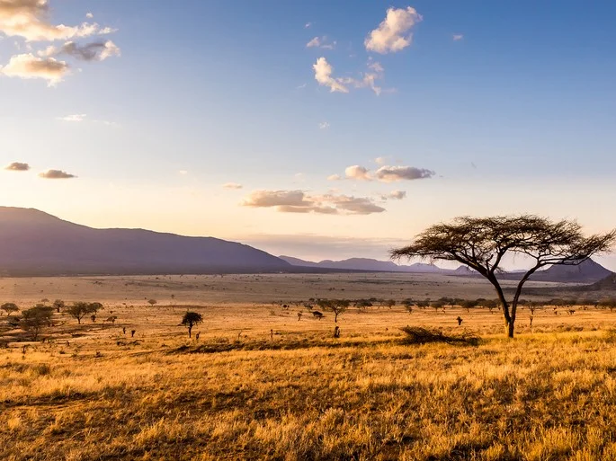

Leão
O leão é um mamífero pertencente à ordem Carnivora e família Felidae, sendo conhecido como “rei das selvas”. Ele se alimenta de outros animais, como gnus e zebras, e vive em grupos, que apresentam divisões bem marcadas, sendo o macho responsável pela defesa do grupo e a fêmea pela caça e cuidado com os filhotes.
Apesar de serem admirados por sua força, atualmente as populações de leões estão em declínio, sendo a espécie classificada como vulnerável pela IUCN (sigla em inglês para União Internacional para a Conservação da Natureza). Os leões costumam ser divididos em subpopulações asiáticas e subpopulações africanas. Neste texto falaremos mais a respeito do leão-africano.

caracteristicas
Segundo maior felino do mundo, o leão perde em tamanho apenas para o tigre. Os leões apresentam de 1,37 a 2 m de tamanho (corpo e cabeça), e sua cauda pode atingir até 100 cm de comprimento. O peso varia entre 120 e 190 quilos, mas vale destacar que já foram descritos indivíduos com mais de 250 kg. O maior leão já encontrado pesava 272 kg.
Os leões apresentam uma pelagem amarela dourada, a qual é importante para garantir a camuflagem em meio à vegetação da savana. Quando jovens, apresentam manchas claras em sua pelagem, as quais desaparecem à medida que se tornam mais velhos. Os machos se destacam pela presença de jubas, pelos longos localizados ao redor de sua cabeça. Algumas fêmeas podem apresentar jubas, mas não se sabe por que isso ocorre.

Habitat
Os leões-africanos são encontrados vivendo em planícies ou savanas, habitando, atualmente, o leste e sul da África. As populações de leões tiveram grandes perdas nos últimos anos, não sendo encontradas em muitos países africanos. Uma das ameaças aos leões é o ser humano, que, muitas vezes, mata essa espécie como forma de proteger seus rebanhos ou ainda para exibi-los como troféus.
